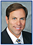

Conversations with friends, colleagues and family periodically turn to the concern that the next generations [of physicians] will be detrimentally impacted by our generation.
While healthcare reform, entitlement programs and the impact of rising healthcare costs on the GNP are each critically important, I am also concerned about an issue closer to us all: the growing number of physicians who choose not to pursue a career as a partner/owner in a private practice. While there are benefits associated with the physician-employee model, the fact remains that when a smaller pool of doctors considers ownership, it becomes difficult to execute long-range planning and develop the first-rate practice you aspire to create.
A 2013 survey reports that one in six physicians say they do not have an ownership stake in the practice in which they work. By avoiding the responsibility of business ownership, these employed physicians do not have direct concerns about the financial well-being of their mode of practice. They do not face the majority of administrative challenges, as well as the hours of work dedicated to managing such issues.
If it’s a question of those “extra hours,” then we should be concerned. Think of the 1984 film, “The Karate Kid.” Miyagi, the karate master, demands that Daniel, an awkward adolescent, spend countless hours painting fences and applying wax to his car, and then waxing it off. Yet Daniel is interested in learning karate only for self-defense.
It is only during his first conflict that Daniel realizes the hours devoted to the repetitive exercises were a significant part of training. He learns that proficiency emerges only from extensive discipline and practice.
In his book, Outliers: The Story of Success, Malcolm Gladwell examines the characteristics of the brightest, most talented and most successful individuals of the past and present day to determine which attributes best represent the common thread that may lead to such success. He asks, “What makes high achievers different?”
After studying and conducting interviews with men and women from many disciplines and cultures, Gladwell concludes that most achievements or breakthroughs come only after years of practice, experimentation or study. Gladwell determines that, on average, these individuals immerse themselves in their chosen field or talent for at least 10,000 hours before hitting their peak performance. In short, no shortcut exists to attain success.
Not one style of medical practice is right for everyone — people have differing interests, responsibilities and notions regarding how they wish to practice medicine.
However, as we relinquish our control and permit other parties to make more of the decisions about the delivery, reimbursement and regulations that govern health care, we lose more control of our advocacy for patient care and the ability to practice medicine in the environments we feel are best for ourselves. OM
|  | Steven M. Silverstein, MD, FACS, is a cornea-trained comprehensive ophthalmologist in practice at Silverstein Eye Centers in Kansas City, Mo. He invites comments. His e-mail is ssilverstein@silversteineyecenters.com. |